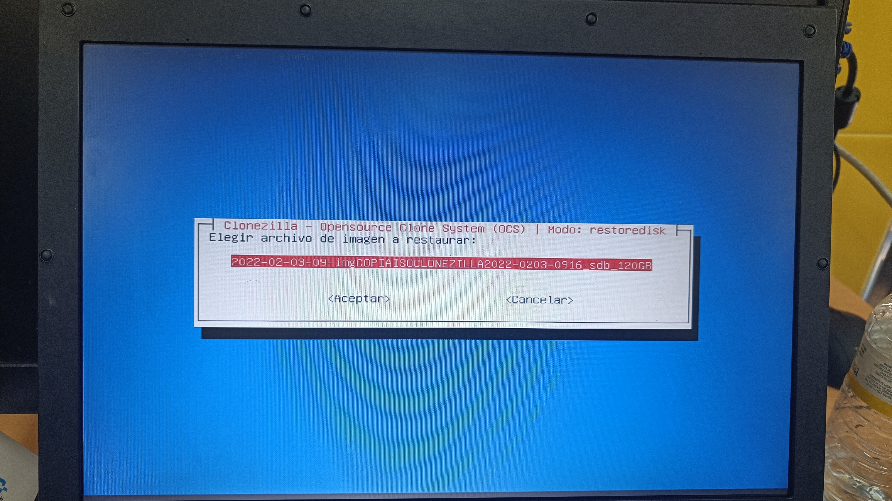
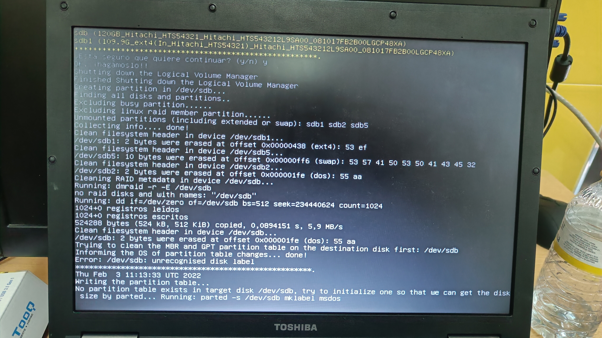
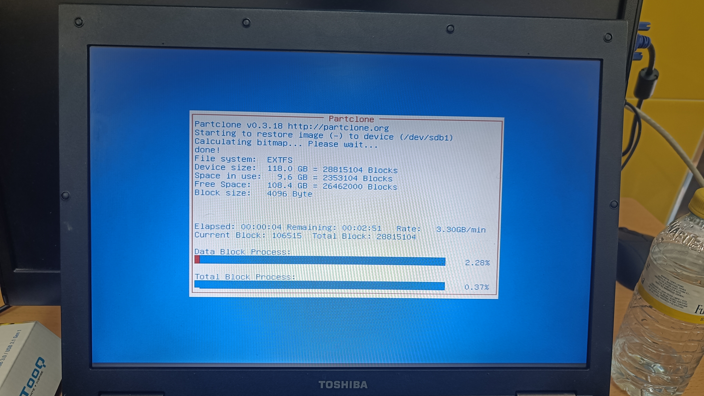

Clonezilla Por Samba
* SE RECOMIENDA PONER LA WEB ENTRE 110% Y 125% *
Cuando tengamos creado el pen booteado se inicia desde ahi y nos saldrá la captura actual que será el inicio de clonezilla.
Elegimos la opción de idioma España, para que salga el programa en Español.
Le daremos a mantener la distribución de teclado, para no confundirnos al teclear.
Seleccionamos Iniciar Clonezilla para que nuestro programa empieze a funcionar, la otra opción será por si queremos usar la shell.
Aqui elegimos device-imagen porque queremos hacer una imagen del sistema.
Usaremos samba server ya que queremos una copia remota del disco.

Elegimos el modo de red DHCP
Ponemos la direccion ip de donde queremos guardar la copia.
Ponemos el nombre de usuario que tenemos en el ordenador.
Ponemos el nombre de la carpeta que hemos creado anteriormente
Dejamos el modo de seguridad por defecto.
Escribimos la contraseña del ordenador para que se sincronice.
El Modo beginner es un modo que deja por defecto algunas opciones y es que el nos viene perfecto.

Savedisk para tener una copia completa.
Ponemos un nombre para nuestro disco.
Damos OK en el disco que queremos clonar.
Para la compresion usaremos ZIP , ya que es el más usado a nivel mundial.
Le decimos que no queremos la comprobación en este caso ya que tardaría mucho , aqui depende de cada persona.
Si quiere cifrar el sistema se le da a que si , es una parte importante por si os cogen el ordenador , en mi caso le dare a no para que no pida contraseña en el tutorial.
Una vez cuando acabe de hacer la copia , le damos a que reinicie el sistema
Vemos como se está descargando la copia
Aqui nos sale un error ya que nuestro disco duro no tenemos espacio y por lo tanto sale este fallo.
Restaurar Clonezilla Samba
Para restaurar clonezilla por Samba , lo que tenemos que hacer darle a restoredisk
Elegimos el disco duro externo que es donde estará el sistema.

Elegimos el destino que sera en el disco duro del ordenador.

Le damos a choose para que cuando acabe reinicie sin preeguntar.
Nos saldrá esta pantalla para confirmar que hayamos hecho todo correctamente y le damos al Enter.
Una vez aquí ya nos estara restaurando el sistema.